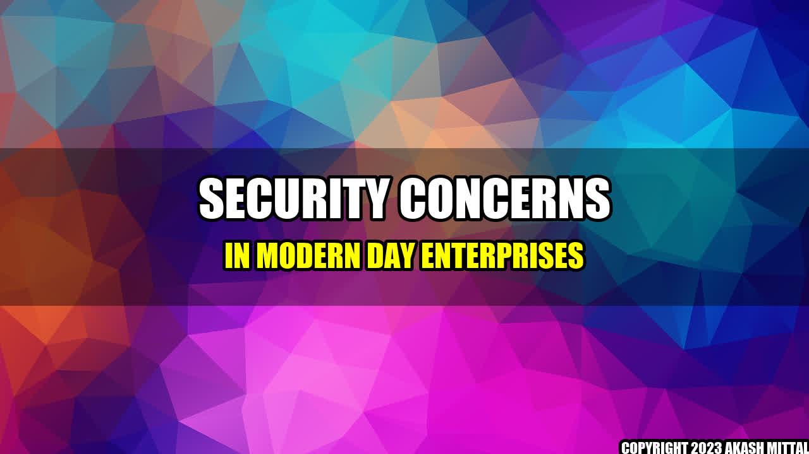

Security Concerns in Modern-Day Enterprises

Once upon a time, a software company named Equifax suffered a massive data breach that exposed sensitive information like social security numbers and credit card details of more than 143 million consumers. As a result, the company had to pay millions of dollars in settlements and damage control efforts. This is just one example of how security concerns can affect not just a company's reputation, but also its finances, customer trust, and overall business operations.
Real Life Examples
Equifax is not the only company that has faced security breaches. In 2017, the ransomware WannaCry affected more than 200,000 computers across 150 countries, including the UK's National Health Service and FedEx. In 2020, the popular video-conferencing platform Zoom was criticized for its weak encryption, resulting in multiple privacy and security issues. Apart from these, there have been numerous cases of phishing attacks, password breaches, and insider threats.
Main Companies and their Actions
- Microsoft: Microsoft has been at the forefront of providing security solutions for its customers. Its Defender Antivirus and Security Center provide features like endpoint protection, cloud security, threat intelligence, and more.
- Cisco: Cisco's security solutions cover areas like network security, cloud security, email security, and others. Its umbrella security platform provides complete visibility and threat detection capabilities.
- Palo Alto Networks: Palo Alto Networks provides advanced firewall protection, secure access service edge (SASE) solutions, and other security services. Its security operating platform unifies security technologies across endpoints, networks, and clouds.
Summary and Critical Comments
- The security concerns faced by enterprises are not just limited to data breaches or malware attacks, but also extend to areas like insider threats and compliance regulations.
- It is important for companies to invest in advanced security solutions and adopt best practices like regular security assessments, employee training, and incident response planning.
- While companies can take several measures to minimize security risks, there will always be a possibility of new and emerging threats. Therefore, it is vital for enterprises to remain proactive and constantly upgrade their security strategies.
Reference URLs and Further Readings
Akash Mittal Tech Article
Share on Twitter Share on LinkedIn